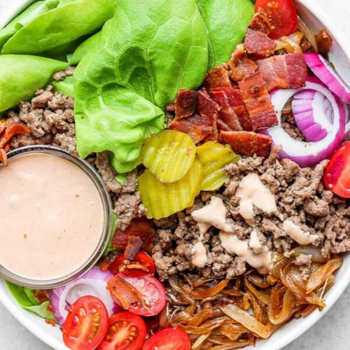

- 3 lbs Potatoes
- ⅓ cup Oil
- 3 tbsp Hot Sauce
- 1 tbsp Garlic powder
- 1 pkt Ranch Seasoning
- 1 tsp Salt
- ½ tsp Black Pepper
- 2 lbs Chicken Breasts
- 1 cup Bacon Bits
- 1 cup Shredded Cheddar Cheese
- ¼ cup Green Onions
Comfort Foods
Foods that make you feel good
Chicken Bacon Ranch Potato Bake
Chicken Bacon Ranch Potato Bake
Ingredients
Directions
- Prep potatoes: Preheat oven to 425F. Add the potato chunks to a large mixing bowl, then add oil, hot sauce, garlic powder, 1 tablespoon of the Ranch seasoning packet, salt, and pepper to the bowl. Mix well until oil and seasonings are evenly distributed. Using a slotted spoon (don’t pour them in), add the potatoes to a 9×13 inch casserole dish. Save the bowl and leave any oil/seasonings that have collected in the bowl there for the chicken.
- Cook potatoes: Roast the potatoes in the preheated oven for 45 minutes total, stirring every 15 minutes so the potatoes cook evenly.
- Prep chicken: Cut chicken into 1 inch chunks if not already done, then add to the same bowl the potatoes were mixed in. Add the remainder of the Ranch seasoning packet to the chicken and stir until well mixed and chicken is coated in oil from the bowl. Set aside until the potatoes have cooked for 45 minutes.
- Put it together: After the potatoes have cooked for 45 minutes, remove the dish from the oven and give the potatoes a final stir. Add a layer of bacon bits (about 2/3 of them) on top of the potatoes, followed by about 1/2 cup of cheese. Next, add ALL of the raw chicken to the casserole dish, in as much of a single layer as possible. On top of the chicken, add the remaining bits of bacon and the rest of the cheese.
- Bake & serve: Bake in the 425F degree oven for 15-20 minutes, until the chicken is completely cooked through and all the cheese is melty. Serve with salad or a side veggie if preferred. Store in an airtight container and enjoy within 4 days.
French Onion Soup

French Onion Soup
Ingredients
- 4 lbs Yellow Onions
- 3 tbsp Butter
- 3 cloves Garlic
- 3 tbsp Flour
- ½ cup Dry White Wine
- 6 cup Beef Stock
- 1 tsp Worcestershire Sauce
- 1 Bay Leaf
- 3 sprigs Fresh Thyme
- 1 cup of Shredded Gouda Cheese
Directions
- To make the caramelized onions, simply melt the butter in a large stockpot over medium heat. Add your onions, and toss so that they are coated in the butter. Let them cook for about 5 minutes, until they start to turn a bit golden on the bottom, and then give them a stir. Repeat until the onions have caramelized into a rich chestnut brown color
- Add the remaining ingredients. Stir the stock, Worcestershire, bay leaf and thyme together in a large stockpot, then let the soup continue to cook until it reaches a simmer. Reduce heat and simmer for at least 10 minutes. Then remove the thyme sprigs and bay leaf, give the soup a taste, and season as needed with S&P.
- Toast the bread. While the soup is simmering, go ahead and prep your toppings as well. If you’re going the traditional route with a slice of bread, toast it in the oven or in a toaster until it is nice and golden.
- Broil. Place your oven-safe bowls on a thick baking sheet. Then once the soup is ready to go, ladle the soup into each bowl, top with the toasted bread and your desired amount of cheese. Place the baking sheet on an oven rack about 6 inches from the heat and broil for 2-4 minutes until the cheese is melted and bubbly, keeping a close eye on the cheese so that it doesn’t burn.
- And…serve! While the cheese is freshly-melted and the soup is hot and bubbly. Yum!
Street Corn Enchiladas

Street Corn Enchiladas
Ingredients
- 4 cup Frozen Corn
- 3 cup Shredded Monterrey Jack Cheese
- ¼ cup Cotija Cheese
- 8 oz Cream Cheese
- 1 tbsp Lime Juice
- 1 Jalapeño
- ½ tsp chili powder
- ¼ tsp cumin
- ¼ cup Cilantro
- 10 8-inch Flour Tortillas
- 10 oz Green Enchilada Sauce
- ½ cup Sour Cream
- ½ cup Salsa Verde
Directions
- Preheat oven to 350°. Lightly grease a 9×13" baking dish.
- In a large bowl, combine corn, 2 cups Monterrey Jack cheese, cotija cheese, cream cheese, lime juice, jalapeno, chili powder, cumin cilantro and salt and pepper.
- In a medium bowl, whisk together remaining ingredients. Spread about ½ cup of sauce in the bottom of the prepared pan.
- Add about ¼ cup of the corn mixture to the center of a tortilla. Roll up and place seam side down in the baking dish. Repeat with remaining filling and tortillas.
- Evenly spread remaining sauce over the enchiladas. Sprinkle with remaining Monterrey Jack cheese.
- Cover and bake for ~20 minutes. Uncover and bake another 10-15 minutes, or until sauce is bubbly and cheese is golden.
- Serve with additional chopped cilantro, lime wedges and cotija cheese for garnish, if desired.
Fettuccine Alfredo
Fettuccine Alfredo
Ingredients
- 16 oz fettuccine pasta
- 3 tbsp Butter
- 4 cloves Garlic
- 8 oz Cream Cheese
- 1 cup Heavy Cream
- 1 cup Milk
- 1½ cup Parmesan Cheese
- 1 Bay Leaf
Directions
- Prepare fettuccine according to package directions. Set aside.
- In a saucepan, melt the butter on medium heat and add the minced garlic. Saute for about 1 minute, or until the garlic is fragrant.
- Slowly stir in the milk and cream. Slowly simmer for about 1 minute, stirring occasionally.
- Gently add the cream cheese to the warmed milk mixture. Gently stir until fully melted.
- Reduce the heat to low, and add in the Parmesan cheese. Stir for about 4 minutes, until all the cheese is melted.
- Remove the saucepan from the heat, and pour the alfredo sauce over the prepared fettuccine. Gently toss to coat.
- Season with salt and pepper to taste. Garnish with chopped fresh parsley, or additional shredded Parmesan cheese. Serve warm.
Baked Honey Sriracha Wings
Baked Honey Sriracha Wings
Ingredients
- 2 lbs Chicken Wings
- 2 tbsp Butter
- 1 tbsp Vegetable Oil
- 1 tsp Garlic Powder
- 1 tbsp Cilantro
- 1 tbsp Sesame Seeds
-
For the Glaze
- 5 tbsp Butter
- 1 tbsp Flour
- ¼ cup Sriracha
- 1 tbsp Tamari Sauce
- 1 Lime
Directions
- Preheat oven to 400°. Line a baking sheet with parchment paper.
- To make the glaze, melt butter in a small saucepan over medium heat. Whisk in flour until lightly browned, about 1 minute. Stir in honey, Sriracha, soy sauce and lime juice. Bring to a boil; simmer until slightly thickened, about 1-2 minutes.
- In a large bowl, combine wings, butter, vegetable oil, garlic powder, salt and pepper, to taste./li>
- Place wings onto the prepared baking sheet and bake for 25-30 minutes, using metal tongs to turn at halftime. Brush wings with Sriracha glaze and broil for 3-4 minutes, or until crisp and crusted.
- Serve immediately, garnished with cilantro and sesame seeds, if desired.
Burger Bowl

Burger Bowl
Ingredients
- 1 Hidden Valley Rach Burger Secret Sauce
- 1 Onion
- 1 lb Ground Beef
- ¼ tsp Ground Black Pepper
- ½ tsp Garlic Powder
- ½ tsp Onion Powder
- 1 head of Lettuce
- 1 cup cherry tomatoes
- 4 pieces Bacon
- 1 Burger Pickles
- 1 Avacado
Directions
- To make the caramelized onions, simply melt the butter in a large stockpot over medium heat. Add your onions, and toss so that they are coated in the butter. Continue cooking onions 15-30 minutes, turning heat down as necessary, until they start to turn golden brown.
- Bring large cast iron skillet to medium high heat. Add ground beef, kosher salt, ground black pepper, garlic powder, and onion powder. Stir to combine and continue cooking until meat is cooked through. Pour off any excess grease. Taste and adjust any seasonings, as desired.
- Divide the lettuce, tomatoes, purple onion, bacon, pickles, and avocado between two bowls.
- Then divide the cooked hamburger and caramelized onions between the two bowls.
- Finally, top with as much Special Sauce as you want.
Family Favorites
Something everyone will love
Pineapple shrimp friced rice
Pineappleshrimpfriedrice
Ingredients
- 2 tablespoons vegetable oil
- 1 pound shrimp
- 2 cloves garlic
- 1 medium onion
- 1 red bell pepper
- 1 cup fresh pineapple chunks
- 3 cups cooked jasmine rice
- 2 eggs
- 2 tablespoons soy sauce
- 1 tablespoon oyster sauce (optional)
- 1 teaspoon curry powder (optional)
- 1 cup frozen peas and carrots
- 2 green onions
- Add Salt and pepper
Directions
- Prepare the Shrimp: Heat 1 tablespoon of vegetable oil in a large skillet or wok over medium-high heat.
- the shrimp and stir-fry until they turn pink and are cooked through, about 3-4 minutes.
- the shrimp from the skillet and set aside.
- Cook the Vegetables: In the same skillet, add the remaining tablespoon of oil.
- the minced garlic and chopped onion, and sauté until they are soft and fragrant, about 2 minutes.
- the diced bell pepper and pineapple chunks, and cook for another 2-3 minutes.
- the Rice: Push the vegetables to one side of the skillet and pour the beaten eggs into the other side.
- the eggs until fully cooked, then mix them with the vegetables.
- the cooked rice to the skillet and stir well to combine.
- and Combine: Stir in the soy sauce, fish sauce (if using), oyster sauce (if using), and curry powder (if using).
- Add the thawed peas and carrots, and cooked shrimp.
- everything together until heated through and well combined.
- and Serve: Season with salt and pepper to taste. Stir in the sliced green onions.
- Garnish with fresh cilantro or basil if desired. Serve hot.
Chili
Chili
Ingredients
- 2 tablespoons olive oil
- 1 large onion
- 2 cloves garlic
- 1 pound ground beef (or turkey)
- 1 green bell pepper
- 1 red bell pepper
- 1 can (15 oz) kidney beans
- 1 can (15 oz) black beans
- 1 can (28 oz) diced tomatoes
- 1 can (15 oz) tomato sauce
- 2 tablespoons chili powder
- 1 teaspoon smoked paprika
- 1 teaspoon dried oregano
- 1/2 teaspoon cayenne pepper (optional)
- Salt and pepper to taste
- Optional toppings: shredded cheese, sour cream, chopped green onions, fresh cilantro, jalapenos
Directions
- Heat the olive oil in a large pot over medium heat.
- Add the onion and garlic, and sauté until soft and translucent.
- the ground beef (or turkey) and cook until browned, breaking it up with a spoon.
- Drain any excess fat.
- in the bell peppers and cook for another 5 minutes until they start to soften.
- Add the kidney beans, black beans, diced tomatoes, and tomato sauce to the pot.
- Stir in the chili powder, cumin, paprika, oregano, and cayenne pepper (if using). Season with salt and pepper.
- Bring to a simmer, then reduce the heat to low and let it cook for about 30-45 minutes, stirring occasionally.
- /li>Adjust seasoning to taste. Serve hot with your favorite toppings.
- Enjoy!
Chicken Parmesan
ChickenParmesan
Ingredients
- boneless, skinless chicken breasts
- Salt and pepper to taste
- 1 cup all-purpose flour
- 2 large eggs
- 1 cup bread crumbs (Italian seasoned )
- 1/2 cup grated Parmesan cheese
- 1/4 cup olive oil
- 2 cups marinara sauce
- 1 1/2 cups shredded mozzarella cheese
- basil or parsley(optional)
- pasta
Directions
- Preheat your oven to 375°F (190°C).
- Prepare the Chicken: Season the chicken breasts with salt and pepper.
- Dip each piece in flour, shaking off any excess. Dip in the beaten eggs, then coat with the bread crumbs mixed with Parmesan cheese.
- Cook the Chicken: Heat the olive oil in a large skillet over medium-high heat.
- Cook the chicken breasts until golden brown on both sides, about 3-4 minutes per side.
- Transfer the chicken to a baking dish.
- Top with Sauce and Cheese: Spoon the marinara sauce over the chicken breasts.
- Sprinkle with mozzarella cheese.
- Bake the Chicken: Bake in the preheated oven for 20-25 minutes, or until the chicken is cooked through and the cheese is melted and bubbly.
- Garnish and Serve: Garnish with fresh basil or parsley if desired.
- Serve the Chicken Parmesan over pasta.
- Enjoy!
Garlic Herb Steak and Mushrooms
Garlic Herb Steak and Mushrooms
Ingredients
- 1 tbsp olive oil
- 1 tbsp butter
- 6 ounce mushrooms sliced
- 3 cloves garlic
- 1 teaspoon thyme
- 1 teaspoon rosemary
- 1 teaspoon oregano
- 2 lean New York Steak strip steaks
- salt and pepper (to taste) For the butter compound
- 1/4 cupbutter
- 3 cloves garlic
- 1 tsp thyme
- 1 tsp rosemary
- 1 tsp oregano
Directions
- In a large cast iron skillet over medium-high heat, add olive oil and butter, mushrooms, garlic, thyme, rosemary, and oregano. Cook for about 3 minutes or until tender. Remove and set aside on a plate.
- Turn the skillet to high heat. Add the steaks. Cook on each side for 3 minutes or until outside is browned. Reduce heat to medium-high. Cook the steaks to the desired doneness. Estimate about 10 minutes flipping 3 times to get a medium well.
- Right before the steaks are done, make the garlic butter compound. Mix the butter, garlic and fresh chopped herbs. Slather on top of steaks. Add the mushrooms back to the pan and heat through and let the butter melt into the steaks.
Quesabirria Tacos
Quesabirria Tacos
Ingredients
- 4 cups birria meat
- 2 cups birria broth
- 12 large corn tortillas
- 3 cups oaxaca or mozzarella cheese
- 1/2 cup cilantro, chopped
- 1/2 small onion, chopped
Directions
- In a large shallow bowl, add the birria broth. Dip each tortilla in the liquid.
- Add oil to a cast iron skillet and place over medium heat. Once hot, add a soaked tortilla to it. Sprinkle with Oaxaca cheese, then add the birria meat. Fold in half and cook both sides for 2-3 minutes, or until golden and crispy.
- Serve with cilantro and diced onions.
Fish and Fries
Fish and Fries
Ingredients
- 2 medium potatoes
- 2 tablespoons olive oil
- 1/4 teaspoon pepper
- 1/3 cup all-purpose flour
- 1/4 teaspoon pepper
- 1 large egg
- 2 tablespoons water
- 2/3 cup crushed cornflakes
- 1 tablespoon grated Parmesan cheese
- 1/8 teaspoon cayenne pepper
- 1 pound haddock or cod fillets
- Tartar sauce (optional)
Directions
- Preheat oven to 425°. Peel and cut potatoes lengthwise into 1/2-in.-thick slices; cut slices into 1/2-in.-thick sticks.
- In a large bowl, toss potatoes with oil and pepper. Transfer to a 15x10x1-in. baking pan coated with cooking spray. Bake, uncovered, 25-30 minutes or until golden brown and crisp, stirring once.
- Meanwhile, in a shallow bowl, mix flour and pepper. In another shallow bowl, whisk egg with water. In a third bowl, toss cornflakes with cheese and cayenne. Dip fish in flour mixture to coat both sides; shake off excess. Dip in egg mixture, then in cornflake mixture, patting to help coating adhere.
- Place on a baking sheet coated with cooking spray. Bake 10-12 minutes or until fish just begins to flake easily with a fork. Serve with potatoes and, if desired, tartar sauce.
Healthy
Vegetarian and health-conscious menu options
Watermelon Sushi
Watermelon Sushi
Ingredients
- 1 cup sushi rice
- 4 pieces nori
- 1 container pre-cut watermelon
- 1 avocado
- 4 slices cream cheese
- Korean BBQ sauce (to taste)
- sriracha (to taste)
- salt (to taste)
Directions
- Preheat oven to 375F.
- Cut watermelon into thinner strips and lay strips on a parchment-lined baking sheet. Brush on sriracha & sprinkle with salt. Put into oven and cook 45 mins.
- Cook rice as directed on packaging.
- Allow rice & watermelon to cool to room temperature.
- Cut Avocado into thin slices. Cut cream cheese into thin slices.
- Lay nori paper on a flat surface, rough side up, and add rice to paper. Create a thin, even layer so that the nori is 3/4ths covered.
- Near the edge of the nori where there is no rice, add your strips of cream cheese, watermelon, and avocado. Roll the nori tightly.
- Cut the roll into 8 pieces, starting by cutting the roll in half. Then cutting each segment in half again twice.
- Drizzle on korean BBQ sauce.
Tofu Bahn Mi

Tofu Bahn Mi
Ingredients
- 1 block tofu
- 4 Tbsp soy sauce
- 3 Tbsp white vinegar
- 1 Tbsp pure maple syrup
- 2 minced cloves garlic
- 1 French baguette
- 2 carrots
- Mayo (to taste)
- sliced pickes (to taste)
- cilantro (to taste)
Directions
- Preheat over to 450F.
- Mix soy sauce, vinegar, maple syrup, and garlic in a bowl to create a marinade.
- Cut tofu into evenly sized rectangles. Put in marinade and allow to sit 10 minutes.
- Bake tofu 15 - 20 minutes.
- Cut or grate carrots and cucumbers into thin strips.
- Cut bread in half, add mayo as desired. Add cilantro, carrots, pickles, and tofu.
Red Lentil Soup

Red Lentil Soup
Ingredients
- 3 tbsp olive oil
- 1 large onion
- 2 cloves garlic
- 1 tbsp tomato paste
- 1 tsp ground cumin
- Salt and black pepper
- Pinch of chili powder or ground cayenne
- 1 cup red lentils
- 1 large carrot
- Juice of ½ lemon
- 3 tbsp chopped fresh cilantro
- Optional: Add a dollop of non-fat greek yogurt
Directions
- In a large pot, heat 3 tablespoons oil over high until hot and shimmering. Add onion and garlic, and sauté until golden, about 4 minutes.
- Stir in tomato paste, cumin, ¼ teaspoons each salt and black pepper and the chili powder, and sauté for 2 minutes longer.
- Add broth, 2 cups water, lentils and carrot. Bring to a simmer, then partly cover pot and turn heat to medium-low. Simmer until lentils are soft, about 30 minutes. Taste and add salt if necessary.
- Using an immersion or regular blender or a food processor, purée half the soup, then add it back to pot. The soup should be somewhat chunky.
- Reheat soup if necessary, then stir in lemon juice and cilantro. Serve soup drizzled with good olive oil and dusted lightly with chili powder, if desired.
Tofu Caesar Salad
Tofu Caesar Salad
Ingredients
- 1/2 cup light mayo
- 1 clove garlic
- 1 tsp Dijon mustard
- 2 tsp lemon juice
- 1/2 teaspoon vegetarian Worchestershire sauce
- 1/8 tsp fine salt
- 1/3 cup (1 ounce) grated rennet-free Parmesan
- 1 Tbsp water
- Freshly ground black pepper
- shredded Romaine lettuce
- 1 block tofu
Directions
- Preheat over to 450F.
- Line a baking sheet with parchment paper. Cut tofu into tiny squares and line them on baking sheet.
- Season the tofu with salt, pepper, and poultry seasoning.
- Bake for 15-20 minutes.
- In a liquid measuring cup or bowl, combine the mayonnaise, garlic, lemon juice, Dijon, and Worcestershire sauce, and salt. Stir to combine.
- Stir in the the water. Season generously with black pepper, to taste. I usually think the dressing tastes just right, but if you’d prefer a more bold dressing, add another ¼ teaspoon Worcestershire sauce, or for more zippy dressing, add up to 1 teaspoon additional lemon juice. Serve as desired.
- Put romaine lettuce in a bowl and drizzle lightly with dressing (to taste).
- Add the tofu & Parmesan cheese. Mix well.
Vegetarian Noodle Soup
Vegetarian Noodle Soup
Ingredients
- 400 g rice noodles
- 4 cups (32 oz/1 litre) vegetable or chicken stock (broth)
- 5 cups water
- 3 large cloves garlic
- 2 tsp minced ginger
- 2 tsp sugar
- 3 tbsp soy sauce
- 2 tsp cornflour / corn starch
- 2 Tbsp sesame paste or tahini
- 4 tbsp black vinegar
- 2 tsp chilli bean sauce (or substitute with another chilli paste or sauce).
- 1 /12 tsp sesame oil
- 2 medium carrots
- 4 bok choy
- 2 cups broccoli florets
- 1 1/2 cups bean sprouts
- 1 scallion / shallot
Directions
- Combine stock ingredients (stock, water, garlic, ginger, and sugar) in a large pot and bring to boil.
- Meanwhile, mix the Stock Sauce ingredients (soy sauce, cornflour, sesame paste, black vinegar, chili bean sauce, sesame oil) together in a small bowl and cut all the vegetables into bite size pieces.
- Add the Stock Sauce and mix well to dissolve into the soup. Adjust seasoning as required.
- When the stock comes to a boil, place rice stick noodles in the stock, then 1 minute later add the carrots and broccoli, then 1 minute later remove from heat and add the bok choy stems.
- Divide the noodles and vegetables between bowls, top with the bok choy leaves and bean sprouts.
- Ladle soup into bowls over the vegetables and noodles, and garnish with spring onions.
- Optional: finish with chilli oil and more chilli paste - if you can handle the heat!
Yogurt Parfait
Yogurt Parfait
Ingredients
- 1 serving non-fat Greek yogurt
- variety of berries to taste
- 1 tbsp chia seeds
- 1 tbsp hemp seeds
- 1/4 serving shaved almonds
- 3 dates
- optional: drizzle of honey or maple syrup
Directions
- optional: soak chia seeds overnight in water or milk / plant based milk
- Put yogurt in a bowl.
- Add chia & hemp seeds. Stir well.
- Add additional toppings.
- Drizzle with maple syrup or honey.